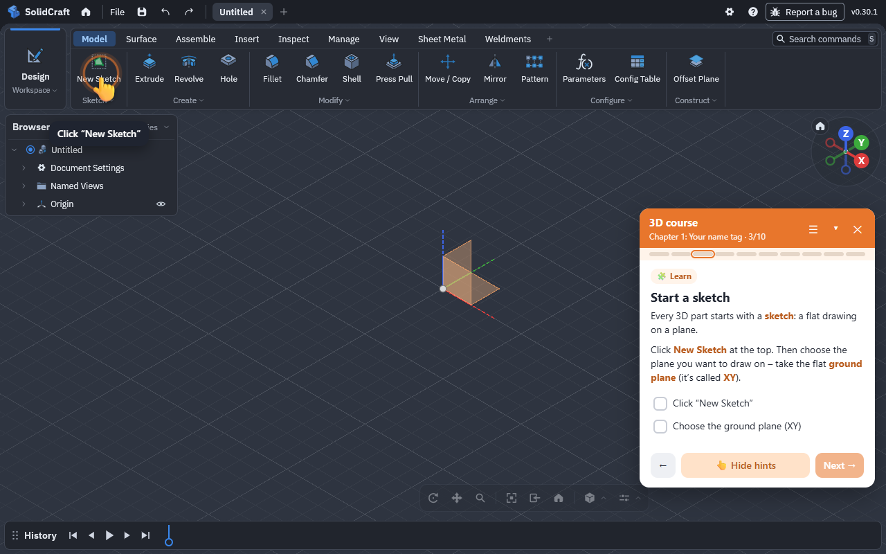
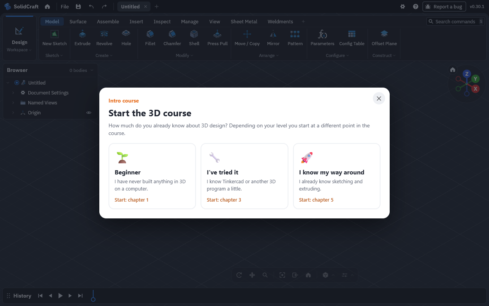
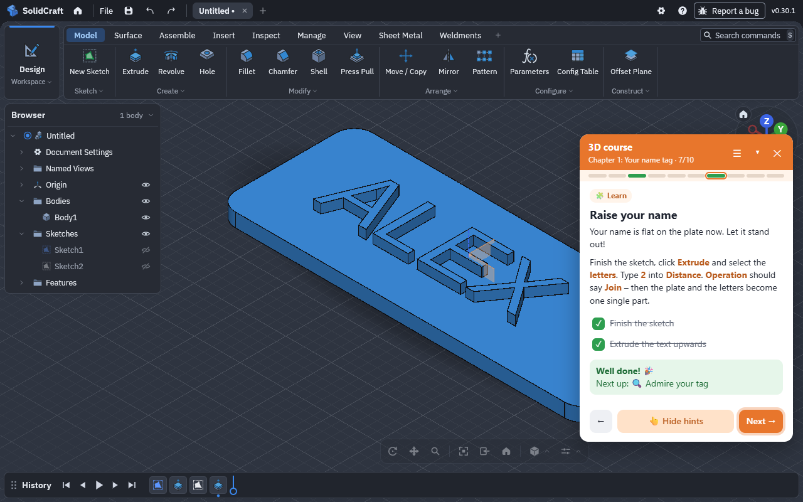
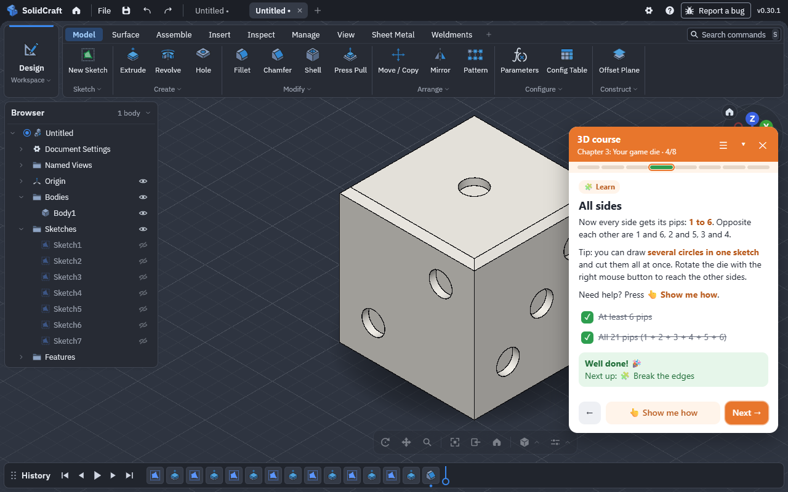
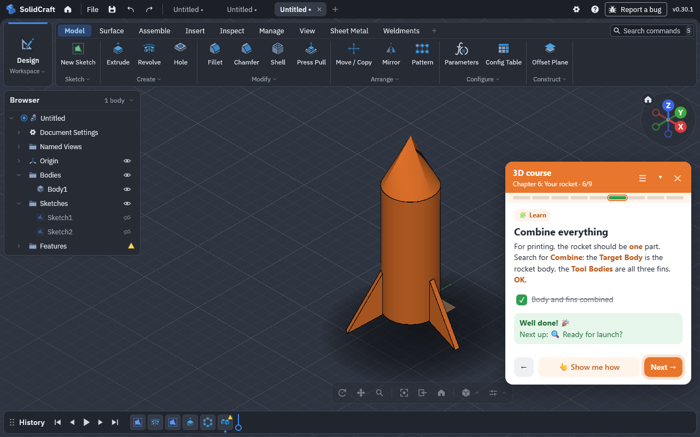

A guided course for kids aged 8 to 14, right inside the free web CAD SolidCraft. A hand shows where to click – and every chapter ends with a project for the 3D printer.

SolidCraft is a powerful, free CAD program in the browser – with hundreds of tools. That’s a lot for kids at the start. The course takes them by the hand without hiding anything.
An animated hand points at the right button, the field in the dialog or the face in the 3D model.
The extension notices when the sketch is drawn, the plate is extruded or the hole is drilled – with confetti.
From a name tag to a rocket. Every chapter ends with an STL export for the 3D printer.
Beginner, tried it before or pro – every chapter is always available.
The course automatically speaks SolidCraft’s language, so the button names always match.
No account, no server, no data collection. Progress stays in the browser.
All pictures are real screenshots of the extension in SolidCraft.




Every chapter adds one or two new tools and ends with a project of your own – 50 steps in total.
A plate with your own name standing out. The basics: sketch, rectangle, extrude, text.
Round corners and a hole for the key ring.
A 20 mm cube with all 21 pips – opposite sides always add up to 7.
A hollow cylinder with an extra compartment – two bodies become one.
Two parts that really fit together: with clearance and a little maths.
Half an outline is revolved into a round body, three fins spread around it.
Works in Chrome, Edge and Brave on a computer. SolidCraft itself needs no account.
chrome://extensions or edge://extensions and switch on Developer mode.SolidCraft is a free, open-source CAD program that runs right in the browser (app.solidcraft.io). You sketch, extrude and build bodies like in professional design software – with nothing to install.
No. It’s an independent open-source project. It uses SolidCraft’s official browser API and never changes your models.
For children and young people aged about 8 to 14. Three starting levels let beginners and more experienced kids start at the right point.
Tinkercad builds models from ready-made shapes. In SolidCraft kids learn how real CAD programs work: draw a sketch, extrude it, round edges, design parts that fit together. The course makes that first step kid-friendly.
No – neither for SolidCraft nor for the extension.
Best on a computer with a mouse. It also works on Chromebooks with Chrome; tablets aren’t supported.
English and German. The course follows SolidCraft’s language; you can change it in the course menu. More languages can be added.
No. The checks are generous – your own sizes and ways of building are explicitly allowed.
The extension collects no data, needs no account, sends nothing to any server and keeps course progress only in your browser. Full privacy policy